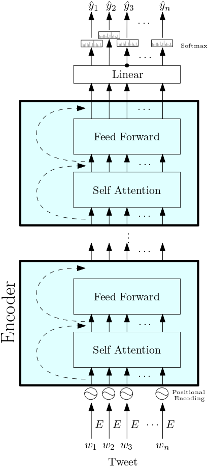
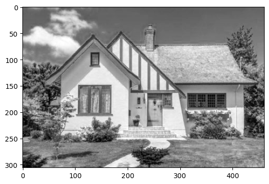
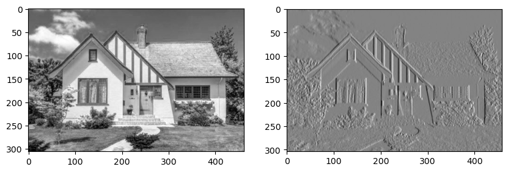
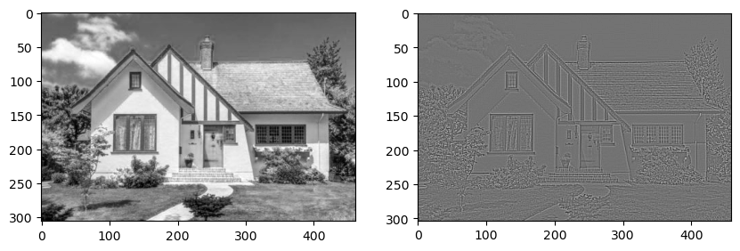
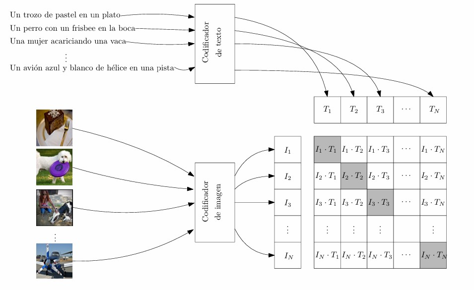

from scipy.signal import correlate
import numpy as npModelos de Deep Learning
Deep Learning
El Deep Learning o Aprendizaje Profundo (AP) es una de las técnicas de IA que más se han estado usando en la actualidad. Su fama se debe principalmente a los buenos resultados que ha dado en diferentes tareas como clasificación de imágenes, traducción de textos, detección de objetos y análisis de sentimiento entre muchas otras.
Es importante mencionar que no toda la IA es aprendizaje profundo pues existen muchas otras técnicas como Máquina de Soporte Vectorial o Árboles de Decisión que pueden ser muy efectivas en ciertos problemas. El AP no siempre es la mejor opción por varios factores, los principales son el tamaño de los datos y el poder de cómputo. El AP necesita una gran cantidad de datos para aprender, mientras más, mejor. Para poder pensar en usar AP se debe contar con un conjunto de datos de varios miles de ejemplos en el caso de imágenes y cientos de miles para textos. La técnica de aprendizaje del AP generalmente implica el uso de hardware especializado como las GPU’s (tarjetas gráficas como las de Nvidia) que no están disponibles en la mayoría de las computadoras personales. En estos casos se recomienda usar técnicas más tradicionales para resolver los problemas que pueden dar resultados competitivos.
El AP no es una idea nueva, el método actual es muy similar al propuesto por Geoffrey Hinton a principios de los años 80’s. Su popularidad actual se deben a múltiples factores entre los que destacan el aumento de los datos para entrenamiento, el uso de GPU’s y los buenos resultados obtenidos en competencias internacionales. El internet contribuyó a la recolección de una gran cantidad de datos (texto, imágenes o videos) que pudieron ser usados para el aprendizaje. Las GPU’s que se usaban para los videojuegos resultaron perfectas para calcular la gran cantidad de variables que tiene un modelo de AP. Desde 2012, la mayoría de las competencias las han ganado métodos que tiene que ver con AP.
En esta unidad vamos a ver algunos de los principales modelos de AP que ya han sido entrenados en grandes volúmenes de datos y pueden ser usados para resolver algunas tareas. El funcionamiento en detalle de los modelos quedará para futuros cursos de la maestría.
Modelos de Lenguaje
El estudio de textos se hace mediante el área de Procesamiento de Lenguaje Natural (PLN) y las principales tareas es la clasificación y la de predicción de texto. Los modelos de lenguaje actuales se basan en la arquitectura Transformer, que son una serie de codificadores y decodificadores uno sobre otro. Los codificadores tienen capas de atención que sirven para agregar información de otras palabras. Modelos como BERT y ROBERTA sólo usan codificadores mientras que modelos como los ChatGPT usan codificadores y decodificadores. En general los decoders son los encargados de generar cadenas de texto. Los codificadores sirven para tareas como clasificación de textos.
La entrada de estos modelos es texto, que se divide en palabras o tokens antes de ser introducidos a los codificadores. Los tokens pueden ser palabras o partes de palabras. Al conjunto de todos los tokens en el corpus se llama vocabulario. El modelo BERT tiene un vocabulario de 30,000 tokens que usa para dividir cualquier texto de entrada.
Los tokens en el vocabulario están hechos de caracteres. Por ejemplo, algunos tokens pueden ser sientas, ##gata, preceptos, Emergencia, …
Cuando el token inicia con ## quiere decir que puede ser usado como una parte de una palabra, por ejemplo cabalgata es una palabra no muy común pero se puede hacer con cabal y ##gata. Para la elección de los tokens se usan algoritmos como el de WordPiece.
Los codificadores necesitan trabajar con datos numéricos, no con texto, así que los tokens se deben convertir a vectores antes de entrar en los codificadores. Para eso se usa una capa de embeddig que no es otra cosa que una lista que tiene un vector (usualmente de 512 dimensiones) para cada token. Así cada token se convierte en un vector y pasa a los codificadores. La salida de los codificadores sigue siendo un vector por cada token. La diferencia es que estos vectores de salida tienen la propiedad de que palabras con significados similares tienen vectores cercanos en el espacio. Estos vectores, llamados embeddings (no confundir con la capa de embedding) o encajes, son los que se usan para tareas como la de clasificación.
Al texto de entrada se le agregan tokens especiales para marcar el inicio y el fin de la oración. Los tokens son [CLS] y el [SEP] (o [END]). Esta operación y la de convertir el texto a tokens la hace el tokenizador del modelo. Es importante que para introducir texto a un modelo, necesitamos su tokenizador asociado. No es lo mismo un tokenizador para un modelo en inglés que uno en español. Incluso para modelos del mismo idioma, se debe usar el tokenizador adecuado o la salida del modelo será pura basura.

Modelos de Visión
Los modelos de visión tienen como entradas imágenes o videos. Una de las tareas más populares es la de clasificación de imágenes, donde se le asigna una etiqueta a la imagen de una lista de miles posibles. Los modelos de visión se basan en la operación de convolución, que es un producto de una parte de la imagen por un filtro. La operación de convolución transforma la imagen original en mapas de activación donde se resaltan aspectos como bordes o esquinas. Las capas de convolución se aplican una sobre otra para agregar complejidad a los mapas de activación y que detecten propiedades más sofisticadas como formas geométricas u objetos.
Las imágenes se representan mediante un arreglo de números. Una imagen a color que mide \(H\times W\) donde \(H\) es el alto y \(W\) el ancho (en pixeles), se puede representar mediante un arreglo que mide \(H\times W\times 3\). El 3 es por los tres colores primarios Rojo, Verde y Azul (RGB en inglés). Cada pixel lo representa un vector de los tres colores primarios.
Ejemplos de convoluciones
En el siguiente ejemplo tenemos la matriz \(A\) y se la aplicará el filtro \(f\).
A = np.array([[4,1,7,2,3], [8,3,1,2,2], [6,5,7,4,3], [2,2,3,1,3],[4,3,4,2,3]])
Aarray([[4, 1, 7, 2, 3],
[8, 3, 1, 2, 2],
[6, 5, 7, 4, 3],
[2, 2, 3, 1, 3],
[4, 3, 4, 2, 3]])f = np.array([[1, 0, -1], [1, 0, -1], [1, 0, -1]])
farray([[ 1, 0, -1],
[ 1, 0, -1],
[ 1, 0, -1]])La operación convolución es la siguiente: Suponga que la imagen es la matriz \(A\), y el filtro es la \(f\). El filtro hace un barrido sobre los pixeles de la imagen aplicando la operación de multiplicación (coordenada a coordenada) seguida de la suma. El barrido del filtro sobre la imagen empieza en la esquina superior izquierda y se va recorriendo a la derecha. Cuando llega al borde se regresa a la izquierda y baja un pixel. Este proceso se sigue hasta llegar a la esquina inferior derecha.
Mediante el siguiente código se obtiene la matríz resultante o el mapa de activación.
correlate(A, f, mode='valid')array([[ 3, 1, 7],
[ 5, 3, 3],
[-2, 3, 5]])En el ejemplo, la primera convolución es el filtro por la esquina superior izquierda (del mismo tamaño que el filtro), esto es \[(4∗1+8∗1+6∗1)+(1∗0+3∗0+5∗0)+(7∗−1+1∗−1+7∗−1) = 3\]
En este caso, el filtro tiene 9 posiciones posibles sobre la imagen, 3 desplazamientos horizontales y 3 verticales, dando como resultado un mapa de activación de \(3\times3\).
Ejemplo con imágenes
Ahora veamos el efecto de aplicar una convolución a una imagen en lugar de una matriz y ver como quedan los mapas de activación.
import matplotlib.pyplot as pltimg = plt.imread("house.jpg")
img = img[:,:,0]
plt.imshow(img, cmap='gray')
plt.show()
El siguiente filtro se usa para detectar bordes verticales. La imagen de la derecha es el mapa de activación o el resultado de aplicar la convolución a la imagen. Note cómo las líneas horizontales desaparecen.
f = np.array([[-1, 0, 1], [-1, 0, 1], [-1, 0, 1]])
farray([[-1, 0, 1],
[-1, 0, 1],
[-1, 0, 1]])T = correlate(img, f, mode='valid')
plt.figure(figsize=(10, 5))
plt.subplot(1,2,1)
plt.imshow(img, cmap='gray')
plt.subplot(1,2,2)
plt.imshow(T, cmap='gray')
plt.show()
Y este filtro se usa para detectar bordes horizontales. Note cómo los bordes verticales desaparecen.
f = np.array([[-1, -1, -1], [0, 0, 0], [1, 1, 1]])
farray([[-1, -1, -1],
[ 0, 0, 0],
[ 1, 1, 1]])T = correlate(img, f, mode='valid')
plt.figure(figsize=(10, 5))
plt.subplot(1,2,1)
plt.imshow(img, cmap='gray')
plt.subplot(1,2,2)
plt.imshow(T, cmap='gray')
plt.show()El siguiente filtro resalta los bordes y elimina todo lo demás.
f = np.array([[-1, -1, -1], [-1, 8, -1], [-1, -1, -1]])
farray([[-1, -1, -1],
[-1, 8, -1],
[-1, -1, -1]])T = correlate(img, f, mode='valid')
plt.figure(figsize=(10, 5))
plt.subplot(1,2,1)
plt.imshow(img, cmap='gray')
plt.subplot(1,2,2)
plt.imshow(T, cmap='gray')
plt.show()
Este proceso se puede repetir varias veces, por ejemplo, si se tiene una imagen de 32 x 32 a color, se le pueden aplicar 5 kernels de 5x5x3 y cada uno produce un mapa de activación de 28x28, entonces al final tenemos una salida de 28x28x5 (un mapa de activación después de otro). Luego podemos aplicar 10 kernels de 5x5x5 para tener una salida de 24x24x10. Esta salida debe tener mucha información de la imagen, los mapas de activación puede detectar cosas como bordes, esquinas, texturas o formas y objetos.
Al final podemos tener un arreglo de tamaño muy grande, por ejemplo 128 x 128 x 512, para convertirlo en un vector podemos aplanarlo o usar una función de pooling. El aplanado es muy simple, un arreglo de 24 x 24 x 10 se reacomoda para tener un vector de dimensión 242410=5760. El Global Average Pooling toma cada mapa de activación y sus valores los promedia para obtener un solo valor, así un arreglo de 128 x 128 x 512 se convierte un vector de 512 dimensiones. Así como en el caso del texto, a estos vectores también se les conoce con el nombre de embeddings o encajes.
Modelos multimodales
Existen modelos que pueden trabajar tanto con imágenes como con texto, a estos se les llama multimodales. Uno de los más famosos es el CLIP (Contrastive Language-Image Pretraining). La estructura del CLIP es la de un codificador para el texto y uno para la imagen. La salida del codificador de texto es el vector correspondiente al token [CLS] (el del inicio). De manera similar al texto, la imagen se divide en una cuadrícula y cada bloque se toma como un token, los tokens se meten a un codificador y así es como tenemos un vector de salida. Teniendo los dos vectores o encajes, lo que se busca es que el encaje de una imagen sea igual al encaje producido por el texto que describe esa imagen. En el siguiente diagrama se muestra cómo funciona el entrenamiento de CLIP.
Cada imagen tiene su respectiva descripción y lo que se quiere es que los codificadores de texto y de imagen produzcan el mismo vector (o vectores muy parecidos) para la imagen y su texto y que al mismo tiempo sean alejados de los vectores de las otras imágenes y descripciones.

La similitud entre dos vectores unitarios se mide con la similitud coseno que se define como:
\[\texttt{Coseno}(x,y) = \frac{x\cdot y}{|x|\cdot |y|}\]
Cuendo el coseno es 1, dedimos que los vectores son iguales (o que tienen la misma dirección) y si el coseno es 0, los vectores son muy diferentes en su dirección (son ortogonales). Con esta medida de similitud, queremos que la matriz de la imagen anterior se parezca a la identidad, unos en la diagonal (los vectores \(I_j\) y \(T_j\) son parecidos) y ceros en todo lo demás (el vector \(I_j\) no se parece a los \(T_k\) cuando \(k\) es distinto de \(j\)).
Clasificación Zero-Shot
Con el modelo entrenado de CLIP se puede hacer clasificación tipo Zero-Shot, lo que significa que se puede usar el modelo para resolver tareas para las cuales no fue entrenado. Para usar CLIP como un clasificador de imágenes, podemos hacer lo siguiente:
Dadas las clases, formar un texto en forma de descripción. Por ejemplo, supongamos que queremos clasificar en las clases de Animal, Fruta, y Persona. Podemos formar las descripciones:
- Esta es una foto de un animal
- Esta es una foto de una fruta
- Esta es una foto de una personal
y meterlas al codificador de texto de CLIP para obtener los encajes \(T_1\), \(T_2\) y \(T_3\) respectivamente.
Luego, una imagen se mete al codificador de imagen del CLIP para obtener el encaje \(I\). Comparamos los vectores con la similitud coseno y calculamos \(\texttt{Coseno}(T_1, I)\), \(\texttt{Coseno}(T_2, I)\) y \(\texttt{Coseno}(T_3, I)\).
La clase de la imagen será la que tenga mayor similitud con \(I\).